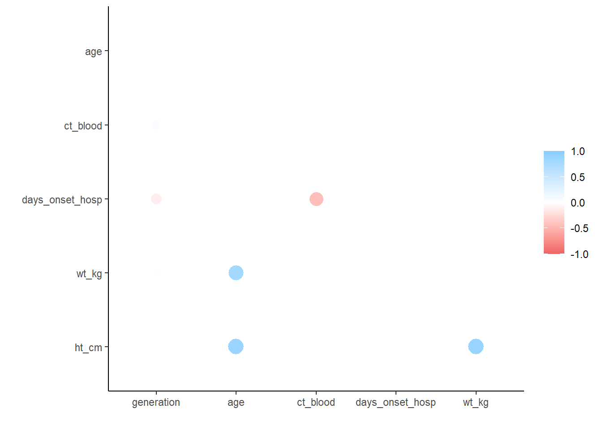

17 Bảng mô tả

Chương này minh họa cách sử dụng các package janitor, dplyr, gtsummary, rstatix, và base R để tóm tắt dữ liệu và tạo bảng với thống kê mô tả.
Chương này bao gồm cách để tạo bảng cơ bản, trong khi đó chương Trình bày bảng bao gồm cách để định dạng đẹp và in chúng.*
Mỗi package này đều có những ưu và nhược điểm trong từng khía cạnh như sự đơn giản, khả năng tiếp cận kết quả, chất lượng kết quả được hiển thị. Sử dụng chương này để quyết định cách tiếp cận nào phù hợp với trường hợp của bạn.
Bạn có một số lựa chọn khi tạo bảng tóm tắt và bảng chéo. Một số yếu tố cần xem xét bao gồm tính đơn giản của code, khả năng tùy chỉnh, đầu ra mong muốn (được in ra R console, dưới dạng dataframe hoặc dưới dạng hình ảnh “đẹp” .png/.jpeg /.html) và dễ xử lý hậu kỳ. Hãy xem xét các điểm dưới đây khi bạn chọn công cụ cho tình huống của mình.
- Dùng
tabyl()từ janitor để tạo và “làm đẹp” cho bảng và bảng chéo
- Dùng
get_summary_stats()từ rstatix để dễ dàng tạo data frame các tóm tắt thống kê dạng số cho nhiều cột và / hoặc nhóm
- Dùng
summarise()vàcount()từ dplyr dành choo các thống kê phức tạp hơn, đầu ra của tidy dataframe hoặc chuẩn bị dữ liệu choggplot()
- Dùng
tbl_summary()từ gtsummary để tạo ra các bảng chi tiết sẵn sàng xuất bản
- Dùng
table()từ base R nếu bạn không có khả năng truy cập vào các package trên
17.1 Chuẩn bị
Gọi packages
Đoạn code này hiển thị việc gọi các packages cần thiết cho các phân tích. Trong sổ tay này, chúng tôi nhấn mạnh đến lệnh p_load() từ pacman, giúp cài đặt các package nếu cần và gọi chúng để sử dụng. Bạn cũng có thể gọi các package đã được cài đặt với library() từ base R. Xem chương R cơ bản để biết thêm thông tin về các package của R.
pacman::p_load(
rio, # File import
here, # File locator
skimr, # get overview of data
tidyverse, # data management + ggplot2 graphics
gtsummary, # summary statistics and tests
rstatix, # summary statistics and statistical tests
janitor, # adding totals and percents to tables
scales, # easily convert proportions to percents
flextable # converting tables to pretty images
)Nhập dữ liệu
Chúng ta sẽ nhập bộ dữ liệu về các trường hợp từ một vụ dịch Ebola mô phỏng. Nếu bạn muốn theo dõi, bấm để tải xuống dữ liệu linelist “đã làm sạch” (as .rds file). Nhập dữ liệu của bạn bằng hàm import() từ package rio (chấp nhận nhiều loại tệp như .xlsx, .rds, .csv - xem thêm chi tiết tại chương Nhập xuất dữ liệu).
50 hàng đầu tiên của linelist được hiển thị như dưới đây.
17.2 Duyệt dữ liệu
skimr package
Khi sử dụng package skimr package, bạn có thể có được cái nhìn tổng quan chi tiết và đẹp về mặt thẩm mỹ của từng biến trong tập dữ liệu của mình. Đọc thêm về skimr tại trang github của nhà phát triển.
Dưới đây, hàm skim() được áp dụng cho toàn bộ data frame linelist giúp bạn có cái nhìn tổng quan về data frame và tóm tắt của tất cả các cột (theo lớp).
| Name | linelist |
| Number of rows | 5888 |
| Number of columns | 30 |
| _______________________ | |
| Column type frequency: | |
| character | 13 |
| Date | 4 |
| factor | 2 |
| numeric | 11 |
| ________________________ | |
| Group variables | None |
Variable type: character
| skim_variable | n_missing | complete_rate | min | max | empty | n_unique | whitespace |
|---|---|---|---|---|---|---|---|
| case_id | 0 | 1.00 | 6 | 6 | 0 | 5888 | 0 |
| outcome | 1323 | 0.78 | 5 | 7 | 0 | 2 | 0 |
| gender | 278 | 0.95 | 1 | 1 | 0 | 2 | 0 |
| age_unit | 0 | 1.00 | 5 | 6 | 0 | 2 | 0 |
| hospital | 0 | 1.00 | 5 | 36 | 0 | 6 | 0 |
| infector | 2088 | 0.65 | 6 | 6 | 0 | 2697 | 0 |
| source | 2088 | 0.65 | 5 | 7 | 0 | 2 | 0 |
| fever | 249 | 0.96 | 2 | 3 | 0 | 2 | 0 |
| chills | 249 | 0.96 | 2 | 3 | 0 | 2 | 0 |
| cough | 249 | 0.96 | 2 | 3 | 0 | 2 | 0 |
| aches | 249 | 0.96 | 2 | 3 | 0 | 2 | 0 |
| vomit | 249 | 0.96 | 2 | 3 | 0 | 2 | 0 |
| time_admission | 765 | 0.87 | 5 | 5 | 0 | 1072 | 0 |
Variable type: Date
| skim_variable | n_missing | complete_rate | min | max | median | n_unique |
|---|---|---|---|---|---|---|
| date_infection | 2087 | 0.65 | 2014-03-19 | 2015-04-27 | 2014-10-11 | 359 |
| date_onset | 256 | 0.96 | 2014-04-07 | 2015-04-30 | 2014-10-23 | 367 |
| date_hospitalisation | 0 | 1.00 | 2014-04-17 | 2015-04-30 | 2014-10-23 | 363 |
| date_outcome | 936 | 0.84 | 2014-04-19 | 2015-06-04 | 2014-11-01 | 371 |
Variable type: factor
| skim_variable | n_missing | complete_rate | ordered | n_unique | top_counts |
|---|---|---|---|---|---|
| age_cat | 86 | 0.99 | FALSE | 8 | 0-4: 1095, 5-9: 1095, 20-: 1073, 10-: 941 |
| age_cat5 | 86 | 0.99 | FALSE | 17 | 0-4: 1095, 5-9: 1095, 10-: 941, 15-: 743 |
Variable type: numeric
| skim_variable | n_missing | complete_rate | mean | sd | p0 | p25 | p50 | p75 | p100 |
|---|---|---|---|---|---|---|---|---|---|
| generation | 0 | 1.00 | 16.56 | 5.79 | 0.00 | 13.00 | 16.00 | 20.00 | 37.00 |
| age | 86 | 0.99 | 16.07 | 12.62 | 0.00 | 6.00 | 13.00 | 23.00 | 84.00 |
| age_years | 86 | 0.99 | 16.02 | 12.64 | 0.00 | 6.00 | 13.00 | 23.00 | 84.00 |
| lon | 0 | 1.00 | -13.23 | 0.02 | -13.27 | -13.25 | -13.23 | -13.22 | -13.21 |
| lat | 0 | 1.00 | 8.47 | 0.01 | 8.45 | 8.46 | 8.47 | 8.48 | 8.49 |
| wt_kg | 0 | 1.00 | 52.64 | 18.58 | -11.00 | 41.00 | 54.00 | 66.00 | 111.00 |
| ht_cm | 0 | 1.00 | 124.96 | 49.52 | 4.00 | 91.00 | 129.00 | 159.00 | 295.00 |
| ct_blood | 0 | 1.00 | 21.21 | 1.69 | 16.00 | 20.00 | 22.00 | 22.00 | 26.00 |
| temp | 149 | 0.97 | 38.56 | 0.98 | 35.20 | 38.20 | 38.80 | 39.20 | 40.80 |
| bmi | 0 | 1.00 | 46.89 | 55.39 | -1200.00 | 24.56 | 32.12 | 50.01 | 1250.00 |
| days_onset_hosp | 256 | 0.96 | 2.06 | 2.26 | 0.00 | 1.00 | 1.00 | 3.00 | 22.00 |
Bạn cũng có thể sử dụng hàm summary() từ base R, để lấy thông tin về toàn bộ tập dữ liệu, nhưng kết quả đầu ra có thể khó đọc hơn so với sử dụng skimr. Do đó, kết quả không được hiển thị bên dưới để tiết kiệm không gian trang.
Thống kê tóm tắt
Bạn có thể sử dụng các hàm base R để trả về thống kê tóm tắt trên một cột dữ liệu dạng số. Bạn có thể trả về hầu hết các thống kê tóm tắt hữu ích cho một cột dạng số bằng cách sử dụng hàm summary(), như dưới đây. Lưu ý rằng tên data frame cũng phải được xác định như hình dưới đây.
## Min. 1st Qu. Median Mean 3rd Qu. Max. NA's
## 0.00 6.00 13.00 16.02 23.00 84.00 86Bạn có thể truy cập và lưu một phần cụ thể của nó bằng dấu ngoặc vuông [ ]:
## [1] 6Bạn có thể trả về các thống kê riêng lẻ với các hàm base R như max(), min(), median(), mean(), quantile(), sd(), và range(). Xem chương R cơ bản để có danh sách đầy đủ.
THẬN TRỌNG: Nếu dữ liệu của bạn chứa các giá trị missing, R muốn bạn biết điều này và do đó sẽ trả về NA trừ khi bạn chỉ định cho các hàm toán học ở trên mà bạn muốn R bỏ qua các giá trị bị thiếu, thông qua đối số na.rm = TRUE.
Bạn có thể sử dụng hàm get_summary_stats() từ package rstatix để trả về thống kê tóm tắt ở định dạng data frame. Điều này có thể hữu ích cho việc thực hiện các hoạt động tiếp theo hoặc vẽ biểu đồ trên các con số. Xem chương Các kiểm định thống kê cơ bản để biết thêm chi tiết về package rstatix và các hàm của nó.
linelist %>%
get_summary_stats(
age, wt_kg, ht_cm, ct_blood, temp, # columns to calculate for
type = "common") # summary stats to return## # A tibble: 5 × 10
## variable n min max median iqr mean sd se ci
## <fct> <dbl> <dbl> <dbl> <dbl> <dbl> <dbl> <dbl> <dbl> <dbl>
## 1 age 5802 0 84 13 17 16.1 12.6 0.166 0.325
## 2 wt_kg 5888 -11 111 54 25 52.6 18.6 0.242 0.475
## 3 ht_cm 5888 4 295 129 68 125. 49.5 0.645 1.26
## 4 ct_blood 5888 16 26 22 2 21.2 1.69 0.022 0.043
## 5 temp 5739 35.2 40.8 38.8 1 38.6 0.977 0.013 0.02517.3 janitor package
Package janitor cung cấp hàm tabyl() giúp tạo ra các bảng đơn và bảng chéo, có thể được “tô điểm” hoặc sửa đổi bằng các hàm trợ giúp để hiển thị phần trăm, tỷ lệ, số đếm, v.v.
Sau đây, chúng ta sẽ pipe linelist data frame tới các hàm của janitor và in kết quả. Nếu muốn, bạn cũng có thể lưu các bảng kết quả bằng toán tử gán <-.
tabyl đơn giản
Cách sử dụng mặc định của hàm tabyl() trên một cột cụ thể tạo ra các giá trị duy nhất, số lượng và “phần trăm” (tỷ lệ thực tế) theo cột. Tỷ lệ có thể có nhiều chữ số thập phân. Bạn có thể điều chỉnh số lượng số thập phân với hàm adorn_rounding() như được mô tả bên dưới.
## age_cat n percent valid_percent
## 0-4 1095 0.185971467 0.188728025
## 5-9 1095 0.185971467 0.188728025
## 10-14 941 0.159816576 0.162185453
## 15-19 743 0.126188859 0.128059290
## 20-29 1073 0.182235054 0.184936229
## 30-49 754 0.128057065 0.129955188
## 50-69 95 0.016134511 0.016373664
## 70+ 6 0.001019022 0.001034126
## <NA> 86 0.014605978 NANhư bạn có thể thấy ở trên, các giá trị missing sẽ được hiển thị trong một hàng có nhãn <NA>. Bạn có thể ngăn điều này bằng cách thêm show_na = FALSE. Nếu không có giá trị missing, hàng này sẽ không xuất hiện. Nếu có giá trị missing, tất cả các tỷ lệ sẽ được trình bày dưới dạng thô (mẫu số bao gồm cả NA) và “hợp lý” (mẫu số không bao gồm NA).
Nếu giá trị cột là dạng Factor và chỉ một vài level nhất định có trong dữ liệu của bạn, thì tất cả các level sẽ vẫn xuất hiện trong bảng. Bạn có thể loại bỏ tính năng này bằng cách thêm show_missing_levels = FALSE. Đọc thêm trong chương Factors.
Bảng chéo
Bảng chéo được tạo bằng cách thêm một hoặc nhiều cột vào hàm tabyl(). Lưu ý rằng bây giờ chỉ có số lượng được hiện thị - tỷ lệ và phần trăm có thể được thêm vào bằng các bước bổ sung sẽ được trình bày bên dưới.
## age_cat f m NA_
## 0-4 640 416 39
## 5-9 641 412 42
## 10-14 518 383 40
## 15-19 359 364 20
## 20-29 468 575 30
## 30-49 179 557 18
## 50-69 2 91 2
## 70+ 0 5 1
## <NA> 0 0 86“Tô điểm” cho tabyl
Sử dụng các hàm “tô điểm” của janitor để thêm tổng hoặc chuyển đổi thành tỷ lệ, phần trăm hoặc điều chỉnh hiển thị. Thông thường, bạn sẽ pipe tabyl thông qua một số hàm này..
| Hàm | Đầu ra |
|---|---|
adorn_totals() |
Thêm tổng (where = “row”, “col”, or “both”). Đặt name = cho “Tổng”. |
adorn_percentages() |
Chuyển đổi số lượng thành tỷ lệ, với denominator = “row”, “col”, hoặc “all” |
adorn_pct_formatting() |
Chuyển đổi tỷ lệ thành tỷ lệ phần trăm. Chỉ rõ digits =. Loại bỏ ký hiệu “%” bằng affix_sign = FALSE. |
adorn_rounding() |
Làm tròn tỷ lệ bằng digits =. Để làm tròn tỷ lệ phần trăm, sử dụng hàm adorn_pct_formatting() với digits =. |
adorn_ns() |
Thêm số lượng vào bảng tỷ lệ hoặc phần trăm. Chỉ định position = “rear” để hiện thị số lượng trong ngoặc đơn, hoặc “front” để đặt phần trăm vào trong ngoặc đơn. |
adorn_title() |
Thêm tiều đề thông qua đối số row_name = và/hoặc col_name = |
Hãy cẩn trọng về thứ tự bạn áp dụng các hàm trên. Dưới đây là một số ví dụ.
Bảng một chiều đơn giản với phần trăm thay vì tỷ lệ mặc định.
linelist %>% # case linelist
tabyl(age_cat) %>% # tabulate counts and proportions by age category
adorn_pct_formatting() # convert proportions to percents## age_cat n percent valid_percent
## 0-4 1095 18.6% 18.9%
## 5-9 1095 18.6% 18.9%
## 10-14 941 16.0% 16.2%
## 15-19 743 12.6% 12.8%
## 20-29 1073 18.2% 18.5%
## 30-49 754 12.8% 13.0%
## 50-69 95 1.6% 1.6%
## 70+ 6 0.1% 0.1%
## <NA> 86 1.5% -Bảng chéo với tổng hàng và phần trăm hàng.
linelist %>%
tabyl(age_cat, gender) %>% # counts by age and gender
adorn_totals(where = "row") %>% # add total row
adorn_percentages(denominator = "row") %>% # convert counts to proportions
adorn_pct_formatting(digits = 1) # convert proportions to percents## age_cat f m NA_
## 0-4 58.4% 38.0% 3.6%
## 5-9 58.5% 37.6% 3.8%
## 10-14 55.0% 40.7% 4.3%
## 15-19 48.3% 49.0% 2.7%
## 20-29 43.6% 53.6% 2.8%
## 30-49 23.7% 73.9% 2.4%
## 50-69 2.1% 95.8% 2.1%
## 70+ 0.0% 83.3% 16.7%
## <NA> 0.0% 0.0% 100.0%
## Total 47.7% 47.6% 4.7%Bảng chéo được điều chỉnh để cả số lượng và phần trăm đều được hiển thị.
linelist %>% # case linelist
tabyl(age_cat, gender) %>% # cross-tabulate counts
adorn_totals(where = "row") %>% # add a total row
adorn_percentages(denominator = "col") %>% # convert to proportions
adorn_pct_formatting() %>% # convert to percents
adorn_ns(position = "front") %>% # display as: "count (percent)"
adorn_title( # adjust titles
row_name = "Age Category",
col_name = "Gender")## Gender
## Age Category f m NA_
## 0-4 640 (22.8%) 416 (14.8%) 39 (14.0%)
## 5-9 641 (22.8%) 412 (14.7%) 42 (15.1%)
## 10-14 518 (18.5%) 383 (13.7%) 40 (14.4%)
## 15-19 359 (12.8%) 364 (13.0%) 20 (7.2%)
## 20-29 468 (16.7%) 575 (20.5%) 30 (10.8%)
## 30-49 179 (6.4%) 557 (19.9%) 18 (6.5%)
## 50-69 2 (0.1%) 91 (3.2%) 2 (0.7%)
## 70+ 0 (0.0%) 5 (0.2%) 1 (0.4%)
## <NA> 0 (0.0%) 0 (0.0%) 86 (30.9%)
## Total 2,807 (100.0%) 2,803 (100.0%) 278 (100.0%)In với tabyl
Theo mặc định, lệnh tabyl sẽ in kết quả thô vào R console của bạn.
Ngoài ra, bạn có thể chuyển tabyl sang flextable hoặc package tương tự để in dưới dạng hình ảnh “đẹp” trong RStudio Viewer, có thể được xuất dưới dạng .png, .jpeg, .html, v.v. Điều này đã được thảo luận trong chương Trình bày bảng . Lưu ý rằng nếu in theo cách này và sử dụng adorn_titles(), bạn cần thêm vào placement = "combined".
linelist %>%
tabyl(age_cat, gender) %>%
adorn_totals(where = "col") %>%
adorn_percentages(denominator = "col") %>%
adorn_pct_formatting() %>%
adorn_ns(position = "front") %>%
adorn_title(
row_name = "Age Category",
col_name = "Gender",
placement = "combined") %>% # this is necessary to print as image
flextable::flextable() %>% # convert to pretty image
flextable::autofit() # format to one line per row Age Category/Gender | f | m | NA_ | Total |
|---|---|---|---|---|
0-4 | 640 (22.8%) | 416 (14.8%) | 39 (14.0%) | 1,095 (18.6%) |
5-9 | 641 (22.8%) | 412 (14.7%) | 42 (15.1%) | 1,095 (18.6%) |
10-14 | 518 (18.5%) | 383 (13.7%) | 40 (14.4%) | 941 (16.0%) |
15-19 | 359 (12.8%) | 364 (13.0%) | 20 (7.2%) | 743 (12.6%) |
20-29 | 468 (16.7%) | 575 (20.5%) | 30 (10.8%) | 1,073 (18.2%) |
30-49 | 179 (6.4%) | 557 (19.9%) | 18 (6.5%) | 754 (12.8%) |
50-69 | 2 (0.1%) | 91 (3.2%) | 2 (0.7%) | 95 (1.6%) |
70+ | 0 (0.0%) | 5 (0.2%) | 1 (0.4%) | 6 (0.1%) |
0 (0.0%) | 0 (0.0%) | 86 (30.9%) | 86 (1.5%) |
Sử dụng trên các bảng khác
Bạn có thể sử dụng các hàmadorn_*() của janitor lên các bảng khác, chẳng hạn các bảng được tạo bởi hàm summarise() và count() của dplyr, hoặc table() từ base R. Đơn giản chỉ cần pipe bảng đến hàm mong muốn của package janitor. Ví dụ:
## hospital n
## Central Hospital 454
## Military Hospital 896
## Missing 1469
## Other 885
## Port Hospital 1762
## St. Mark's Maternity Hospital (SMMH) 422
## Total 5888Lưu với tabyl
Nếu bạn muốn chuyển đổi bảng thành một hình ảnh “đẹp” với package flextable, bạn có thể lưu nó bằng các hàm như save_as_html(), save_as_word(), save_as_ppt(), và save_as_image() từ package flextable (sẽ được bàn luận kỹ hơn ở chương Trình bày bảng). Ví dụ dưới đây, bảng được lưu lại dưới dạng tệp Word, và có khả năng chỉnh sửa được.
linelist %>%
tabyl(age_cat, gender) %>%
adorn_totals(where = "col") %>%
adorn_percentages(denominator = "col") %>%
adorn_pct_formatting() %>%
adorn_ns(position = "front") %>%
adorn_title(
row_name = "Age Category",
col_name = "Gender",
placement = "combined") %>%
flextable::flextable() %>% # convert to image
flextable::autofit() %>% # ensure only one line per row
flextable::save_as_docx(path = "tabyl.docx") # save as Word document to filepath
Thống kê
Bạn có thể áp dụng các kiểm định thống kê bằng tabyls, ví dụ như chisq.test() hoặc fisher.test() từ package stats, như được trình bày dưới đây. Chú ý là giá trị missing không được cho phép vì vậy chúng được loại bỏ khỏi tabyl bằng tùy chọn show_na = FALSE.
##
## Pearson's Chi-squared test
##
## data: age_by_outcome
## X-squared = 6.4931, df = 7, p-value = 0.4835Xem chương Các kiểm định thống kê cơ bản để có thêm code và các mẹo liên quan đến thống kê.
Các mẹo khác
- Thêm đối số
na.rm = TRUEđể loại bỏ các giá trị missing.
- Nếu áp dụng bất kỳ hàm trợ giúp
adorn_*()nào cho các bảng không được tạo bởitabyl(), bạn có thể chỉ định (các) cột cụ thể để áp dụng chúng chẳng hạn nhưadorn_percentage(,,,c(cases,deaths))(chỉ định chúng cho đối số không tên thứ 4). Thay vào đó, hãy cân nhắc sử dụng hàmsummarise().
- Bạn có thể tìm đọc thêm ở janitor page và tabyl vignette.
17.4 dplyr package
dplyr là một phần của package tidyverse và là một công cụ quản lý dữ liệu rất phổ biến. Tạo bảng với các hàm của dplyr như summarise() và count() là một cách tiếp cận hữu ích để tính toán các tóm tắt thống kê, tổng hợp theo nhóm, hoặc chuyển bảng tới ggplot().
summarise() tạo một data frame tổng hợp mới. Nếu dữ liệu được tách nhóm, nó sẽ trả về data frame có một hàng với thống kê tóm tắt được chỉ định cho toàn bộ data frame. Nếu dữ liệu được nhóm lại, data frames sẽ có một hàng cho từng nhóm (xem chương Nhóm dữ liệu).
Bên trong dấu ngoặc đơn của hàm summarise(), bạn sẽ cung cấp tên của từng cột cần tổng hợp mới, theo sau là dấu bằng và một hàm thống kê để áp dụng.
MẸO: Hàm summarise hoạt động được với cả cách viết Anh-Anh và Anh-Mỹ (summarise() và summarize()).
Lấy số lượng
Hàm đơn giản nhất để áp dụng cùng với hàm summarise() là n(). Để trống dấu ngoặc đơn để đếm số hàng.
linelist %>% # begin with linelist
summarise(n_rows = n()) # return new summary dataframe with column n_rows## n_rows
## 1 5888Điều này sẽ thú vị hơn nếu chúng ta đã nhóm dữ liệu trước đó.
linelist %>%
group_by(age_cat) %>% # group data by unique values in column age_cat
summarise(n_rows = n()) # return number of rows *per group*## # A tibble: 9 × 2
## age_cat n_rows
## <fct> <int>
## 1 0-4 1095
## 2 5-9 1095
## 3 10-14 941
## 4 15-19 743
## 5 20-29 1073
## 6 30-49 754
## 7 50-69 95
## 8 70+ 6
## 9 <NA> 86Lệnh trên có thể được rút ngắn bằng cách sử dụng hàmcount() thay thế. count() làm những việc sau:
- Nhóm dữ liệu theo các cột được cung cấp cho nó
- Tổng hợp chúng với
n()(tạo cộtn)
- Tách nhóm dữ liệu
## age_cat n
## 1 0-4 1095
## 2 5-9 1095
## 3 10-14 941
## 4 15-19 743
## 5 20-29 1073
## 6 30-49 754
## 7 50-69 95
## 8 70+ 6
## 9 <NA> 86Bạn có thể thay đổi tên của cột đếm từ mặc định là n thành một cái gì đó cụ thể chẳng hạn như name =.
Tạo bảng đếm cho hai hoặc nhiều cột sẽ vẫn trả về địng dạng “dọc”, với số lượng ở cột n. Xem chương [Pivoting dữ liệu] để hiểu thêm về định dạng dữ liệu “dọc” và “ngang”.
## age_cat outcome n
## 1 0-4 Death 471
## 2 0-4 Recover 364
## 3 0-4 <NA> 260
## 4 5-9 Death 476
## 5 5-9 Recover 391
## 6 5-9 <NA> 228
## 7 10-14 Death 438
## 8 10-14 Recover 303
## 9 10-14 <NA> 200
## 10 15-19 Death 323
## 11 15-19 Recover 251
## 12 15-19 <NA> 169
## 13 20-29 Death 477
## 14 20-29 Recover 367
## 15 20-29 <NA> 229
## 16 30-49 Death 329
## 17 30-49 Recover 238
## 18 30-49 <NA> 187
## 19 50-69 Death 33
## 20 50-69 Recover 38
## 21 50-69 <NA> 24
## 22 70+ Death 3
## 23 70+ Recover 3
## 24 <NA> Death 32
## 25 <NA> Recover 28
## 26 <NA> <NA> 26Hiện tất cả các cấp độ
Nếu bạn tạo bảng cho một cột có kiểu dữ liệu là factor, bạn có thể chắc chắng rằng tất cả các cấp độ được trình bày (không chỉ các cấp có giá trị trong dữ liệu) bằng cách thêm .drop = FALSE vào lệnh summarise() hoặc count().
Kỹ thuật này rất hữu ích để chuẩn hóa các bảng/biểu đồ của bạn. Ví dụ: nếu bạn đang tạo số liệu cho nhiều nhóm con, hoặc liên tục tạo số liệu cho các báo cáo thường quy. Trong các trường hợp này, sự hiện diện của các giá trị trong dữ liệu có thể dao động, nhưng bạn có thể xác định các mức không đổi.
Xem chương Factors để có nhiều thông tin hơn.
Tỷ lệ
Tỷ lệ có thể được thêm vào bằng cách piping bảng tới hàm mutate() để tạo một cột mới. Định nghĩa cột mới là thương của số quan sát của từng yếu tố (mặc định là n) và tổng số quan sát sum() của cột (sẽ trả về giá trị là một tỷ lệ).
Lưu ý trong trường hợp này, sum() trong lệnh mutate() sẽ trả về giá trị của toàn bộ cột n để dùng làm mẫu số của tỷ lệ. Như đã được giải thích trong chương Nhóm dữ liệu, nếu sum() được sử dụng với dữ liệu đã được nhóm (vd: nếu hàm mutate() được theo ngay phía sai hàm group_by()), nó sẽ trả về kết quả tổng hợp theo nhóm. Như đã nếu ở trên, count() hoàn thành nhiệm vụ của mình bằng cách tách nhóm. Vì vậy, trong trường hợp này chúng ta sẽ lấy toàn bộ tỷ lệ của cột.
Để dễ dàng hiển thị phần trăm, bạn có thể đưa tỷ lệ vào trong hàm percent() từ package scales (lưu ý là điều nãy sẽ chuyển kết quả thành dạng ký tự (character)).
age_summary <- linelist %>%
count(age_cat) %>% # group and count by gender (produces "n" column)
mutate( # create percent of column - note the denominator
percent = scales::percent(n / sum(n)))
# print
age_summary## age_cat n percent
## 1 0-4 1095 18.60%
## 2 5-9 1095 18.60%
## 3 10-14 941 15.98%
## 4 15-19 743 12.62%
## 5 20-29 1073 18.22%
## 6 30-49 754 12.81%
## 7 50-69 95 1.61%
## 8 70+ 6 0.10%
## 9 <NA> 86 1.46%Dưới đây là phương pháp tính tỷ lệ trong nhóm. Nó dựa trên các cấp độ nhóm dữ liệu khác nhau được áp dụng và loại bỏ một cách có chọn lọc. Đầu tiên, dữ liệu được nhóm theo outcome thông qua hàm group_by(). Sau đó, hàm count() được áp dụng. Hàm này sẽ tiếp tục nhóm dữ liệu phân theo age_cat và trả vế số lượng theo từng tổ hợp outcome-age-cat. Quan trọng là - khi nó kết thúc quy trình của mình, hàm count() sẽ tách nhóm theo age_cat, nên nhóm dữ liệu duy nhất còn lại là nhóm ban đầu theo outcome. Do đó, bước cuối cùng để tính toán tỷ lệ (mẫu số là sum(n)) vẫn được nhóm theo outcome.
Vẽ biểu đồ
Để hiển thị kết quả từ một bảng “dài” như trên thì vẽ biểu đồ bằng hàm ggplot() tương đối trực quan. Dữ liệu một cách tự nhiên có định dạng “dọc”, nên tương thích với ggplot() một cách tự nhiên. Xem thêm các ví dụ ở chương ggplot cơ bản và Các tips với ggplot.
linelist %>% # begin with linelist
count(age_cat, outcome) %>% # group and tabulate counts by two columns
ggplot()+ # pass new data frame to ggplot
geom_col( # create bar plot
mapping = aes(
x = outcome, # map outcome to x-axis
fill = age_cat, # map age_cat to the fill
y = n)) # map the counts column `n` to the height
Tổng hợp thống kê
Một điểm mạnh của dplyr và summarise() là khả năng trả về các bảng tổng hợp thống kê nâng cao hơn như median(), mean(), max(), min(), sd() (độ lệch chuẩn), và phân vị. Bạn cũng có thể sử dụng sum() để trả vể số lượng dòng thỏa mãn một điều kiện logic nào đó. Như trên, các kết quả đầu ra này có thể được tạo cho toàn bộ data frame hoặc theo nhóm.
Cú pháp là tương tự- bên trong dấu ngoặc hàm summarise() bạn cung cấp tên của từng cột tổng hợp được theo sau bởi dâu bằng và hàm thống kê được áp dụng. Trong hàm thống kê, cung cấp (các) cột sẽ được tính toán và bất kỳ các đối số có liên quan (vd: na.rm = TRUE cho tất cả các hàm toán học).
Bạn cũng có thể sử dụng hàm sum() để trả vể số lượng dòng thỏa mãn một điều kiện logic cụ thể. Biểu thức điều kiện sẽ được đếm nếu nó được đánh giá là TRUE. Ví dụ:
sum(age_years < 18, na.rm=T)
sum(gender == "male", na.rm=T)
sum(response %in% c("Likely", "Very Likely"))
Dưới đây, bộ dữ liệu linelist được tổng hợp để mô tả những ngày trì hoãn từ khi bắt đầu có triệu chứng đến khi nhập viện (cột days_onset_hosp), phân theo bệnh viện.
summary_table <- linelist %>% # begin with linelist, save out as new object
group_by(hospital) %>% # group all calculations by hospital
summarise( # only the below summary columns will be returned
cases = n(), # number of rows per group
delay_max = max(days_onset_hosp, na.rm = T), # max delay
delay_mean = round(mean(days_onset_hosp, na.rm=T), digits = 1), # mean delay, rounded
delay_sd = round(sd(days_onset_hosp, na.rm = T), digits = 1), # standard deviation of delays, rounded
delay_3 = sum(days_onset_hosp >= 3, na.rm = T), # number of rows with delay of 3 or more days
pct_delay_3 = scales::percent(delay_3 / cases) # convert previously-defined delay column to percent
)
summary_table # print## # A tibble: 6 × 7
## hospital cases delay_max delay_mean delay_sd delay_3 pct_delay_3
## <chr> <int> <dbl> <dbl> <dbl> <int> <chr>
## 1 Central Hospital 454 12 1.9 1.9 108 24%
## 2 Military Hospital 896 15 2.1 2.4 253 28%
## 3 Missing 1469 22 2.1 2.3 399 27%
## 4 Other 885 18 2 2.2 234 26%
## 5 Port Hospital 1762 16 2.1 2.2 470 27%
## 6 St. Mark's Maternity Hospital… 422 18 2.1 2.3 116 27%Một vài mẹp:
Sử dụng
sum()với một biểu thức logic để “đếm” các dòng đáp ứng các tiêu chí nhất định (==)
Lưu ý cách sử dụng của
na.rm = TRUEbên trong biểu thức toán học như làsum(), nếu khôngNAsẽ được trả lại nếu dữ liệu có giá trị missing
Sử dụng hàm
percent()từ package scales để dễ dàng chuyển đổi tỷ lệ phần trăm- Thiết lập
accuracy =bằng 0.1 hoặc 0.01 để đảm bảo kết quả hiển thị 1 hoặc 2 chữ số thập phân sau dấ phẩy
- Thiết lập
Sử dụng hàm
round()từ base R để chỉ định số thập phân
Để tính toán các thống kê này trên toàn bộ tập dữ liệu, sử dụng
summarise()và không cógroup_by()
Bạn có thể tạo các cột cho các mục đích tính toán sau này (ví dụ: mẫu số) mà thậm chí bạn bỏ ra khỏi data frame của mình với hàm
select().
Thống kê có điều kiện
Bạn có thể sẽ muốn trả về các thống kê có điều kiện - vd: số hàng tối đa đáp ứng các tiêu chí nhất định. Điều này có thể thực hiện được bằng cáhc subsetting cột bằng dấu ngoặc vuông [ ]. Ví dụ dưới đây trả về nhiệt độ tối đa cho những bệnh nhân được phân loại là có hoặc không bị sốt. Tuy nhiên hãy lưu ý - có thể thích hợp hơn nếu thêm một cột khác vào hàm group_by() và pivot_wider() (như được minh họa dưới đây).
linelist %>%
group_by(hospital) %>%
summarise(
max_temp_fvr = max(temp[fever == "yes"], na.rm = T),
max_temp_no = max(temp[fever == "no"], na.rm = T)
)## # A tibble: 6 × 3
## hospital max_temp_fvr max_temp_no
## <chr> <dbl> <dbl>
## 1 Central Hospital 40.4 38
## 2 Military Hospital 40.5 38
## 3 Missing 40.6 38
## 4 Other 40.8 37.9
## 5 Port Hospital 40.6 38
## 6 St. Mark's Maternity Hospital (SMMH) 40.6 37.9Gắn với nhau
Hàm str_glue() từ package stringr rất hữu ích để kết hợp các giá trị từ một số cột thành một cột mới. Trong trường hợp này nó được sử dụng sau hàm summarise().
Trong chương Ký tự và chuỗi, có nhiều lựa chọn khác nhau để kết hợp các cột được thảo luận, bao gồm cả unite(), và paste0(). Trong trường hợp sử dụng này, chúng tôi ủng hộ str_glue() bởi vì nó linh hoạt hơn unite() và có cú pháp đơn giẩn hơn paste0().
Dưới đây, data frame summary_table (được tạo bên trên) được biến đổi để kết hợp cột delay_mean và delay_sd, định dạng dấu ngoặc đơn được thêm vào cột mới, và các cột cũ tương ứng của chúng bị xóa.
Sau đó, để làm cho bảng dễ nhìn hơn, tổng hàng được thêm vào bằng hàm adorn_totals() từ janitor (bỏ qua các cột không phải số). Cuối cùng, chúng tôi sử dụng hàm select() từ dplyr để sắp xếp và đặt tên lại cho các cột.
Bây giờ bạn có thể chuyển kết quả tới flextable và in chúng thành bảng trong Word, .png, .jpeg, .html, Powerpoint, RMarkdown, v.v.! (xem chương Trình bày bảng).
summary_table %>%
mutate(delay = str_glue("{delay_mean} ({delay_sd})")) %>% # combine and format other values
select(-c(delay_mean, delay_sd)) %>% # remove two old columns
adorn_totals(where = "row") %>% # add total row
select( # order and rename cols
"Hospital Name" = hospital,
"Cases" = cases,
"Max delay" = delay_max,
"Mean (sd)" = delay,
"Delay 3+ days" = delay_3,
"% delay 3+ days" = pct_delay_3
)## Hospital Name Cases Max delay Mean (sd) Delay 3+ days
## Central Hospital 454 12 1.9 (1.9) 108
## Military Hospital 896 15 2.1 (2.4) 253
## Missing 1469 22 2.1 (2.3) 399
## Other 885 18 2 (2.2) 234
## Port Hospital 1762 16 2.1 (2.2) 470
## St. Mark's Maternity Hospital (SMMH) 422 18 2.1 (2.3) 116
## Total 5888 101 - 1580
## % delay 3+ days
## 24%
## 28%
## 27%
## 26%
## 27%
## 27%
## -Bách phân vị
Bách phân vị và tứ phân vị trong dplyr xứng đáng được đề cập tới. Để trả về tứ phân vị, sử dụng quantile() với các giá trị mặc định hoặc chỉ rõ giá trị bạn muốn bằng đối số probs =.
# get default percentile values of age (0%, 25%, 50%, 75%, 100%)
linelist %>%
summarise(age_percentiles = quantile(age_years, na.rm = TRUE))## Warning: Returning more (or less) than 1 row per `summarise()` group was deprecated in dplyr
## 1.1.0.
## ℹ Please use `reframe()` instead.
## ℹ When switching from `summarise()` to `reframe()`, remember that `reframe()` always
## returns an ungrouped data frame and adjust accordingly.
## Call `lifecycle::last_lifecycle_warnings()` to see where this warning was generated.## age_percentiles
## 1 0
## 2 6
## 3 13
## 4 23
## 5 84# get manually-specified percentile values of age (5%, 50%, 75%, 98%)
linelist %>%
summarise(
age_percentiles = quantile(
age_years,
probs = c(.05, 0.5, 0.75, 0.98),
na.rm=TRUE)
)## Warning: Returning more (or less) than 1 row per `summarise()` group was deprecated in dplyr
## 1.1.0.
## ℹ Please use `reframe()` instead.
## ℹ When switching from `summarise()` to `reframe()`, remember that `reframe()` always
## returns an ungrouped data frame and adjust accordingly.
## Call `lifecycle::last_lifecycle_warnings()` to see where this warning was generated.## age_percentiles
## 1 1
## 2 13
## 3 23
## 4 48Nếu bạn muốn trả về phân vị theo nhóm, bạn có thể gặp phải các kết quả đầu ra dài và ít hữu ích hơn nếu bạn chỉ cần thêm cột vào group_by(). Thay vào đó, hãy thử cách tiếp cận này - tạo một cột cho mỗi mức phân vị mong muốn.
# get manually-specified percentile values of age (5%, 50%, 75%, 98%)
linelist %>%
group_by(hospital) %>%
summarise(
p05 = quantile(age_years, probs = 0.05, na.rm=T),
p50 = quantile(age_years, probs = 0.5, na.rm=T),
p75 = quantile(age_years, probs = 0.75, na.rm=T),
p98 = quantile(age_years, probs = 0.98, na.rm=T)
)## # A tibble: 6 × 5
## hospital p05 p50 p75 p98
## <chr> <dbl> <dbl> <dbl> <dbl>
## 1 Central Hospital 1 12 21 48
## 2 Military Hospital 1 13 24 45
## 3 Missing 1 13 23 48.2
## 4 Other 1 13 23 50
## 5 Port Hospital 1 14 24 49
## 6 St. Mark's Maternity Hospital (SMMH) 2 12 22 50.2Mặc dù dplyr summarise() chắc chắn cung cấp khả năng kiểm soát tốt hơn, bạn có thể thấy rằng tất cả các thống kê tổng hợp mà bạn cần có thể được tạo ra với hàm get_summary_stat() từ package rstatix. Nếu thực hiện trên dữ liệu đã được nhóm, nó sẽ trả về các phân vị 0%, 25%, 50%, 75%, và 100%. If applied to ungrouped data, you can specify the percentiles with probs = c(.05, .5, .75, .98).
## # A tibble: 6 × 8
## hospital variable n `0%` `25%` `50%` `75%` `100%`
## <chr> <fct> <dbl> <dbl> <dbl> <dbl> <dbl> <dbl>
## 1 Central Hospital age 445 0 6 12 21 58
## 2 Military Hospital age 884 0 6 14 24 72
## 3 Missing age 1441 0 6 13 23 76
## 4 Other age 873 0 6 13 23 69
## 5 Port Hospital age 1739 0 6 14 24 68
## 6 St. Mark's Maternity Hospital (SMMH) age 420 0 7 12 22 84## # A tibble: 1 × 7
## variable n `0%` `25%` `50%` `75%` `100%`
## <fct> <dbl> <dbl> <dbl> <dbl> <dbl> <dbl>
## 1 age 5802 0 6 13 23 84Tóm tắt dữ liệu tổng hợp
Nếu bạn bắt đầu với dữ liệu tổng hợp (aggregated data), sử dụng n() để trả về số lượng các dòng, không phải là tổng của các số lượng được đếm. Để lấy tổng, sử dụng sum() trên cột của dữ liệu đếm.
Ví dụ, giả sử bạn đang bắt đầu với data frame đếm số lượng như bên dưới, gọi là linelist_agg - nó hiển thị ở định dạng “dọc”, các trường hợp được tính theo outcome và giới tính.
Sau đây chúng ta sẽ tạo data frame minh hoạt số trường hợp của linelist được đếm theo outcome và gender (các giá trị missing được loại bỏ để rõ ràng).
## outcome gender n
## 1 Death f 1227
## 2 Death m 1228
## 3 Recover f 953
## 4 Recover m 950Để tính tổng số lượng (trong cột n) theo nhóm bạn có thể sử dụng hàm summarise() nhưng đặt cột mới bằng sum(n, na.rm=T). Để thêm phần tử điều kiện vào phép toán tổng, bạn có thể sử dụng cú pháp dấu ngoặc vuông tập hợp con [ ] trên cột đếm.
linelist_agg %>%
group_by(outcome) %>%
summarise(
total_cases = sum(n, na.rm=T),
male_cases = sum(n[gender == "m"], na.rm=T),
female_cases = sum(n[gender == "f"], na.rm=T))## # A tibble: 2 × 4
## outcome total_cases male_cases female_cases
## <chr> <int> <int> <int>
## 1 Death 2455 1228 1227
## 2 Recover 1903 950 953across() trên nhiều cột
Bạn có thể sử dụng summarise() trên nhiều cột bằng hàm across(). Điều này làm cho mọi thứ dễ dàng hơn khi bạn muốn tính toán các thống kê giống nhau cho nhiều cột. Đặt across() bên trong summarise() và chỉ rõ những điều sau:
.cols =tên cột viết dưới dạng vectorc()hoặc sử dụng các hàm trợ giúp chọn cột “tidyselect” (được giải thích bên dưới)
.fns =hàm thực hiện (không có dấu ngoặc) - bạn có thể đưa nhiều hàm vào thông qualist()
Ví dụ dưới đây, mean() được áp dụng cho các cột dữ liệu dạng số. Một vectơ tên của các cột được gán cho .cols = và hàm duy nhất mean được xác định (không có dấu ngoặc) cho .fns =. Bất kỳ đối số bổ sung nào cho hàm (vd: na.rm=TRUE) được cung cấp phía sau .fns =, ngăn cách bởi dấu phẩy.
Có thể khó để hiểu được thứ tự của dấu ngoặc đơn và dấu phẩy chính xác khi sử dụng across(). Hãy nhớ là bên trong hàm across() bạn phải bao gồm các cột, các hàm, và tất cả những đối số cần thiết cho các hàm.
linelist %>%
group_by(outcome) %>%
summarise(across(.cols = c(age_years, temp, wt_kg, ht_cm), # columns
.fns = mean, # function
na.rm=T)) # extra arguments## # A tibble: 3 × 5
## outcome age_years temp wt_kg ht_cm
## <chr> <dbl> <dbl> <dbl> <dbl>
## 1 Death 15.9 38.6 52.6 125.
## 2 Recover 16.1 38.6 52.5 125.
## 3 <NA> 16.2 38.6 53.0 125.Nhiều hàm có thể được chạy cùng một lúc. Dưới đây hàm mean và sd được cung cấp cho .fns = bên trong một list(). Bạn có cơ hội cung cấp tên ký tự (vd: “mean” và “sd”) để thêm vào tên các cột mới.
linelist %>%
group_by(outcome) %>%
summarise(across(.cols = c(age_years, temp, wt_kg, ht_cm), # columns
.fns = list("mean" = mean, "sd" = sd), # multiple functions
na.rm=T)) # extra arguments## # A tibble: 3 × 9
## outcome age_years_mean age_years_sd temp_mean temp_sd wt_kg_mean wt_kg_sd ht_cm_mean
## <chr> <dbl> <dbl> <dbl> <dbl> <dbl> <dbl> <dbl>
## 1 Death 15.9 12.3 38.6 0.962 52.6 18.4 125.
## 2 Recover 16.1 13.0 38.6 0.997 52.5 18.6 125.
## 3 <NA> 16.2 12.8 38.6 0.976 53.0 18.9 125.
## # ℹ 1 more variable: ht_cm_sd <dbl>Dưới đây là danh sách các hàm trợ giúp “tidyselect” bạn có thể cung cấp cho .cols = để lựa chọn cột:
everything()- tất cả các cột khác không được đề cập
last_col()- cột cuối cùng
where()- áp dụng một hàm cho tất cả các cột và chọn những cột trả về giá trị TRUE
starts_with()- khớp với một tiền tố được chỉ định. Ví dụ:starts_with("date")ends_with()- khớp với một hậu tố được chỉ định. Ví dụ:ends_with("_end")
contains()- cột chứa một chuỗi ký tự. Ví dụ:contains("time")matches()- áp dụng một biểu thức chính quy (regex). Ví dụ:contains("[pt]al")
num_range()- khoảng giá trị sốany_of()- khớp nếu cột được đặt tên. Hữu ích nếu tên có thể không tồn tại. Ví dụ:any_of(date_onset, date_death, cardiac_arrest)
Ví dụ, để trả về giá trị trung bình của tất cả các cột dạng số, sử dụng where() và thêm vào hàm is.numeric() (không có dấu ngoặc). Tất cả những thứ này vẫn được đặt trong hàm across().
linelist %>%
group_by(outcome) %>%
summarise(across(
.cols = where(is.numeric), # all numeric columns in the data frame
.fns = mean,
na.rm=T))## # A tibble: 3 × 12
## outcome generation age age_years lon lat wt_kg ht_cm ct_blood temp bmi
## <chr> <dbl> <dbl> <dbl> <dbl> <dbl> <dbl> <dbl> <dbl> <dbl> <dbl>
## 1 Death 16.7 15.9 15.9 -13.2 8.47 52.6 125. 21.3 38.6 45.6
## 2 Recover 16.4 16.2 16.1 -13.2 8.47 52.5 125. 21.1 38.6 47.7
## 3 <NA> 16.5 16.3 16.2 -13.2 8.47 53.0 125. 21.2 38.6 48.3
## # ℹ 1 more variable: days_onset_hosp <dbl>Xoay trục ngang (Pivot wider)
Nếu bạn thích bảng của mình ở định dạng “rộng”, bạn có thể biến đổi nó sử dụng hàm tidyr pivot_wider(). Bạn có thể sẽ cần đặt lại tên cho các cột bằng rename(). Để tìm hiểu thêm, vui lòng xem chương [Pivoting dữ liệu].
Ví dụ sau đây bắt đầu bằng một bảng “dài” age_by_outcome từ mục Tỷ lệ. Để dễ hình dung, chúng ta tạo lại bảng và in ra:
age_by_outcome <- linelist %>% # begin with linelist
group_by(outcome) %>% # group by outcome
count(age_cat) %>% # group and count by age_cat, and then remove age_cat grouping
mutate(percent = scales::percent(n / sum(n))) # calculate percent - note the denominator is by outcome groupĐể xoay trục ngang, chúng ta tạo các cột mới từ các giá trị trong cột hiện có age_cat (bằng cách đặt names_from = age_cat). Chúng ta cũng chỉ định rằng các giá trị bảng mới sẽ đến từ cột hiện có n, với values_from = n. Các cột không được đề cập trong lệnh pivoting (outcome) sẽ không thay đổi ở phía ngoài cùng bên trái.
age_by_outcome %>%
select(-percent) %>% # keep only counts for simplicity
pivot_wider(names_from = age_cat, values_from = n) ## # A tibble: 3 × 10
## # Groups: outcome [3]
## outcome `0-4` `5-9` `10-14` `15-19` `20-29` `30-49` `50-69` `70+` `NA`
## <chr> <int> <int> <int> <int> <int> <int> <int> <int> <int>
## 1 Death 471 476 438 323 477 329 33 3 32
## 2 Recover 364 391 303 251 367 238 38 3 28
## 3 <NA> 260 228 200 169 229 187 24 NA 26Tổng các hàng
Khi hàm summarise() vận hành trên dữ liệu đã được nhóm, nó không tính “tổng” một cách tự động. Sau đây là hai cách tiếp cận giúp bạn thêm tổng hàng:
janitor’s adorn_totals()
Nếu bảng của bạn chỉ chứa duy nhất số lượng hoặc tỷ lệ/tỷ lệ phần trăm có thể được tổng hợp thành một tổng, thì bạn có thể tính tổng sử dụng hàm adorn_totals() của package janitor như đã được mô tả bên trên. Lưu ý là hàm này chỉ có thể tính tổng của các cột định dạng là số - nếu bạn muốn tính các loại tổng khác, vui lòng xem cách tiếp cận tiếp theo bằng dplyr.
Dưới đây, bộ dữ liệu linelist được nhóm theo giới và tóm tắt thành một bảng mô tả số trường hợp có outcome đã biết, tử vong và phục hồi. Piping bảng tới hàm adorn_totals() để thêm tổng các hàng ở hàng dưới cùng thể hiện giá trị tổng của từng cột. Các hàm adorn_*() khác điều chỉnh cách kết quả được hiển thị như được comment trong phần code.
linelist %>%
group_by(gender) %>%
summarise(
known_outcome = sum(!is.na(outcome)), # Number of rows in group where outcome is not missing
n_death = sum(outcome == "Death", na.rm=T), # Number of rows in group where outcome is Death
n_recover = sum(outcome == "Recover", na.rm=T), # Number of rows in group where outcome is Recovered
) %>%
adorn_totals() %>% # Adorn total row (sums of each numeric column)
adorn_percentages("col") %>% # Get column proportions
adorn_pct_formatting() %>% # Convert proportions to percents
adorn_ns(position = "front") # display % and counts (with counts in front)## gender known_outcome n_death n_recover
## f 2,180 (47.8%) 1,227 (47.5%) 953 (48.1%)
## m 2,178 (47.7%) 1,228 (47.6%) 950 (47.9%)
## <NA> 207 (4.5%) 127 (4.9%) 80 (4.0%)
## Total 4,565 (100.0%) 2,582 (100.0%) 1,983 (100.0%)summarise() trên dữ liệu “tổng” rồi sau đó bind_rows()
Nếu bảng của bạn chứa các phép tính thống kế chẳng hạn như median(), mean(), v.v, thì cách tiếp cận dùng hàm adorn_totals() bên trên sẽ không đủ. Thay vào đó, để có được thống kê tóm tắt cho toàn bộ tập dữ liệu, bạn phải tính toán chúng bằng lệnh summarise() một cách độc lập sau đó gắn các kết quả này với bảng tổng hợp theo nhóm ban đầu. Để làm điều này, bạn có thể sử dụng hàm bind_rows() từ dplyr như được mô tả trong chương Nối dữ liệu. Dưới đây là một ví dụ:
Bạn có thể tạo bảng tổng hợp của outcome theo bệnh viện với group_by() và summarise() như sau:
by_hospital <- linelist %>%
filter(!is.na(outcome) & hospital != "Missing") %>% # Remove cases with missing outcome or hospital
group_by(hospital, outcome) %>% # Group data
summarise( # Create new summary columns of indicators of interest
N = n(), # Number of rows per hospital-outcome group
ct_value = median(ct_blood, na.rm=T)) # median CT value per group
by_hospital # print table## # A tibble: 10 × 4
## # Groups: hospital [5]
## hospital outcome N ct_value
## <chr> <chr> <int> <dbl>
## 1 Central Hospital Death 193 22
## 2 Central Hospital Recover 165 22
## 3 Military Hospital Death 399 21
## 4 Military Hospital Recover 309 22
## 5 Other Death 395 22
## 6 Other Recover 290 21
## 7 Port Hospital Death 785 22
## 8 Port Hospital Recover 579 21
## 9 St. Mark's Maternity Hospital (SMMH) Death 199 22
## 10 St. Mark's Maternity Hospital (SMMH) Recover 126 22Để tính tổng, vẫn sử dụng hàm summarise() nhưng chỉ nhóm dữ liệu theo outcome (không theo bệnh viện), như dưới đây:
totals <- linelist %>%
filter(!is.na(outcome) & hospital != "Missing") %>%
group_by(outcome) %>% # Grouped only by outcome, not by hospital
summarise(
N = n(), # These statistics are now by outcome only
ct_value = median(ct_blood, na.rm=T))
totals # print table## # A tibble: 2 × 3
## outcome N ct_value
## <chr> <int> <dbl>
## 1 Death 1971 22
## 2 Recover 1469 22Bây giờ chúng ta có thể nối hai data frames này lại với nhau. Lưu ý là bảng by_hospital có 4 cột trong khi đó bảng kết quả totals có 3 cột. Bằng việc sử dụng bind_rows(), các cột được kết hợp theo tên, và bất kỳ khoảng trống nào sẽ được điền vào bằng giá trị NA (ví dụ ở cột hospital là các giá trị cho hai hàng totals mới). Sau khi gắn các hàng, chúng ta chuyển các khoảng trống đó thành “Tổng” bằng cách sử dụng replace_na() (xem chương Làm sạch số liệu và các hàm quan trọng).
Đây là bảng mới với các hàng “Tổng” ở các hàng dưới cùng của bảng.
Bảng này đang có định dạng “dài”, có thể là những gì bạn muốn. Tuy nhiên, bạn có thể xoay bảng này rộng hơn theo chiều ngang để dễ đọc. Xem thêm ở phần Xoay trục ngang (Pivot wider) bên trên, và chương Xoay trục dữ liệu. Bạn cũng có thêm nhiều cột nữa, và sắp xếp chúng một cách đẹp mắt. Phần code được trình bày bên dưới.
table_long %>%
# Pivot wider and format
########################
mutate(hospital = replace_na(hospital, "Total")) %>%
pivot_wider( # Pivot from long to wide
values_from = c(ct_value, N), # new values are from ct and count columns
names_from = outcome) %>% # new column names are from outcomes
mutate( # Add new columns
N_Known = N_Death + N_Recover, # number with known outcome
Pct_Death = scales::percent(N_Death / N_Known, 0.1), # percent cases who died (to 1 decimal)
Pct_Recover = scales::percent(N_Recover / N_Known, 0.1)) %>% # percent who recovered (to 1 decimal)
select( # Re-order columns
hospital, N_Known, # Intro columns
N_Recover, Pct_Recover, ct_value_Recover, # Recovered columns
N_Death, Pct_Death, ct_value_Death) %>% # Death columns
arrange(N_Known) # Arrange rows from lowest to highest (Total row at bottom)## # A tibble: 6 × 8
## # Groups: hospital [6]
## hospital N_Known N_Recover Pct_Recover ct_value_Recover N_Death Pct_Death
## <chr> <int> <int> <chr> <dbl> <int> <chr>
## 1 St. Mark's Maternity… 325 126 38.8% 22 199 61.2%
## 2 Central Hospital 358 165 46.1% 22 193 53.9%
## 3 Other 685 290 42.3% 21 395 57.7%
## 4 Military Hospital 708 309 43.6% 22 399 56.4%
## 5 Port Hospital 1364 579 42.4% 21 785 57.6%
## 6 Total 3440 1469 42.7% 22 1971 57.3%
## # ℹ 1 more variable: ct_value_Death <dbl>Tiếp đó bạn có thể in bảng kết quả dưới dạng một bức ảnh đẹp - sau đây là output được in bằng flextable. Bạn có thể đọc chuyên sâu hơn về ví dụ này và cách tạo được bảng “đẹp” tương tự thế này trong chương Trình bày bảng.
Hospital | Total cases with known outcome | Recovered | Died | ||||
|---|---|---|---|---|---|---|---|
Total | % of cases | Median CT values | Total | % of cases | Median CT values | ||
St. Mark's Maternity Hospital (SMMH) | 325 | 126 | 38.8% | 22 | 199 | 61.2% | 22 |
Central Hospital | 358 | 165 | 46.1% | 22 | 193 | 53.9% | 22 |
Other | 685 | 290 | 42.3% | 21 | 395 | 57.7% | 22 |
Military Hospital | 708 | 309 | 43.6% | 22 | 399 | 56.4% | 21 |
Missing | 1,125 | 514 | 45.7% | 21 | 611 | 54.3% | 21 |
Port Hospital | 1,364 | 579 | 42.4% | 21 | 785 | 57.6% | 22 |
Total | 3,440 | 1,469 | 42.7% | 22 | 1,971 | 57.3% | 22 |
17.5 gtsummary package
Nếu bạn muốn in các thống kê tóm tắt của mình dưới dạng đồ họa đẹp mắt, sẵn sàng xuất bản, bạn có thể sử dụng package gtsummary và hàm của nó tbl_summary(). Phần code ban đầu có thể trông phức tạp một chút, nhưng kết quả đầu ra trông rất đẹp và in ra Viewer panel của RStudio dưới dạng một ảnh HTML. Đọc bản tóm tắt ở đây.
Bạn cũng có thể thêm kết quả của các kiểm định thống kê vào các bảng của gtsummary. Quy trình này được trình bày ở mục gtsummary trong chương Các kiểm định thống kê cơ bản.
Để giới thiệu về tbl_summary(), trước tiên chúng ta sẽ chỉ ra các quy trình cơ bản nhất, giúp bạn thực sự tạo ra một bảng lớn và đẹp. Sau đó, chúng ta sẽ tìm hiểu chi tiết hơn về cách thực hiện các điều chỉnh và các bảng được thiết kế sẵn.
Bảng tổng hợp
Cách làm việc mặc định của tbl_summary() khá kinh ngạc - nó lấy các cột bạn cung cấp và tạo một bảng tóm tắt chỉ trong một lệnh. Hàm in ra số liệu thống kê phù hợp với lớp cột: trung vị và khoảng tứ phân vị (IQR) cho các cột số, và số lượng (%) cho các cột danh mục. Giá trị missing được chuyển đổi thành “Unknown”. Chú thích được thêm vào cuối bảng để giải thích các phép tính thống kê, trong khi tổng N được hiển thị ở trên cùng.
linelist %>%
select(age_years, gender, outcome, fever, temp, hospital) %>% # keep only the columns of interest
tbl_summary() # default| Characteristic | N = 5,8881 |
|---|---|
| age_years | 13 (6, 23) |
| Unknown | 86 |
| gender | |
| f | 2,807 (50%) |
| m | 2,803 (50%) |
| Unknown | 278 |
| outcome | |
| Death | 2,582 (57%) |
| Recover | 1,983 (43%) |
| Unknown | 1,323 |
| fever | 4,549 (81%) |
| Unknown | 249 |
| temp | 38.80 (38.20, 39.20) |
| Unknown | 149 |
| hospital | |
| Central Hospital | 454 (7.7%) |
| Military Hospital | 896 (15%) |
| Missing | 1,469 (25%) |
| Other | 885 (15%) |
| Port Hospital | 1,762 (30%) |
| St. Mark's Maternity Hospital (SMMH) | 422 (7.2%) |
| 1 Median (IQR); n (%) | |
Các điều chỉnh
Bây giờ chúng tôi sẽ giải thích cách hoạt động của hàm và cách điều chỉnh. Các đối số chính được trình bày chi tiết bên dưới:
by =
Bạn có thể phân tầng bảng của mình theo một cột (ví dụ theo outcome), để tạo thành bảng 2 chiều.
statistic =
Sử dụng phương trình để chỉ định thống kê nào sẽ được hiển thị và cách hiển thị chúng. Có hai vế của phương trình, được ngăn cách bởi dấu ~. Ở vế phải, trong dấu ngoặc kép, là hiển thị phép toán thống kê mong muốn, và ở vế trái là các cột mà phép thống kê đó sẽ áp dụng.
- Vế phải của phương trình sử dụng cú pháp của hàm
str_glue()từ stringr (xem Ký tự và chuỗi), với chuỗi hiển thị mong muốn trong dấu ngoặc kép và các phép toán thống kê trong dấu ngoặc nhọn. Bạn có thể thêm các phép thống kê như là “n” (số lượng), “N” (mẫu số), “mean”, “median”, “sd”, “max”, “min”, phân vị “p##” như là “p25”, hoặc phần trăm của một tổng như là “p”. Xem?tbl_summaryđể biết thêm chi tiết.
- Đối với phía bên trái của phương trình, bạn có thể chỉ định các cột theo tên (ví dụ:
agehoặcc(age, gender)) hoặc sử dụng các hàm trợ giúp nhưall_continuous(),all_categorical(),contains(),starts_with(), v.v.
Một ví dụ đơn giản về phương trình statistic = có thể tham khảo ở bên dưới, để chỉ in giá trị trung bình của cột age_years:
linelist %>%
select(age_years) %>% # keep only columns of interest
tbl_summary( # create summary table
statistic = age_years ~ "{mean}") # print mean of age| Characteristic | N = 5,8881 |
|---|---|
| age_years | 16 |
| Unknown | 86 |
| 1 Mean | |
Một phương trình phức tạp hơn một chút có thể như"({min}, {max})", kết hợp các giá trị max và min trong dấu ngoặc đơn và được phân tách bằng dấu phẩy:
linelist %>%
select(age_years) %>% # keep only columns of interest
tbl_summary( # create summary table
statistic = age_years ~ "({min}, {max})") # print min and max of age| Characteristic | N = 5,8881 |
|---|---|
| age_years | (0, 84) |
| Unknown | 86 |
| 1 (Range) | |
Bạn cũng có thể phân biệt cú pháp cho các cột hoặc loại cột riêng biệt. Trong ví dụ phức tạp hơn bên dưới, giá trị được cung cấp cho statistc = là một danh sách chỉ ra rằng đối với tất cả các cột dạng số thì bảng sẽ in ra giá trị trung bình và độ lệch chuẩn bên trong ngoặc, trong khi các cột dạng danh sách thì sẽ in ra n, mẫu số, và phần trăm.
digits =
Điều chỉnh các chữ số và làm tròn. Theo tùy chọn, điều này có thể được chỉ định chỉ dành cho các cột dạng số liên tục (như bên dưới).
label =
Điều chỉnh cách hiển thị tên cột. Cung cấp tên cột và nhãn mong muốn của nó được phân tách bằng dấu ngã. Theo mặc định thì tên cột được hiển thị.
missing_text =
Điều chỉnh cách giá trị missing được hiển thị. Mặc định hiển thị là “Unknown”.
type =
Sử dụng để điều chỉnh số lượng cấp độ của thống kê được hiển thị Cú pháp tương tự như statistic = trong đó bạn cung cấp một phương trình với các cột ở bên trái và một giá trị ở bên phải. Hai trường hợp phổ biến bao gồm:
type = all_categorical() ~ "categorical"Buộc các cột nhị phân (ví dụ:fevercó/không) hiển thị tất cả các cấp độ thay vì chỉ hiện thị hàng “có”
type = all_continuous() ~ "continuous2"Cho phép các kết quả thống kê được trình bày theo nhiều dòng cho mỗi biến, như được trình bày trong phần sau
Trong ví dụ dưới đây, mỗi đối số này được sử dụng để điều chỉnh bảng ban đầu:
linelist %>%
select(age_years, gender, outcome, fever, temp, hospital) %>% # keep only columns of interest
tbl_summary(
by = outcome, # stratify entire table by outcome
statistic = list(all_continuous() ~ "{mean} ({sd})", # stats and format for continuous columns
all_categorical() ~ "{n} / {N} ({p}%)"), # stats and format for categorical columns
digits = all_continuous() ~ 1, # rounding for continuous columns
type = all_categorical() ~ "categorical", # force all categorical levels to display
label = list( # display labels for column names
outcome ~ "Outcome",
age_years ~ "Age (years)",
gender ~ "Gender",
temp ~ "Temperature",
hospital ~ "Hospital"),
missing_text = "Missing" # how missing values should display
)## 1323 observations missing `outcome` have been removed. To include these observations, use `forcats::fct_na_value_to_level()` on `outcome` column before passing to `tbl_summary()`.| Characteristic | Death, N = 2,5821 | Recover, N = 1,9831 |
|---|---|---|
| Age (years) | 15.9 (12.3) | 16.1 (13.0) |
| Missing | 32 | 28 |
| Gender | ||
| f | 1,227 / 2,455 (50%) | 953 / 1,903 (50%) |
| m | 1,228 / 2,455 (50%) | 950 / 1,903 (50%) |
| Missing | 127 | 80 |
| fever | ||
| no | 458 / 2,460 (19%) | 361 / 1,904 (19%) |
| yes | 2,002 / 2,460 (81%) | 1,543 / 1,904 (81%) |
| Missing | 122 | 79 |
| Temperature | 38.6 (1.0) | 38.6 (1.0) |
| Missing | 60 | 55 |
| Hospital | ||
| Central Hospital | 193 / 2,582 (7.5%) | 165 / 1,983 (8.3%) |
| Military Hospital | 399 / 2,582 (15%) | 309 / 1,983 (16%) |
| Missing | 611 / 2,582 (24%) | 514 / 1,983 (26%) |
| Other | 395 / 2,582 (15%) | 290 / 1,983 (15%) |
| Port Hospital | 785 / 2,582 (30%) | 579 / 1,983 (29%) |
| St. Mark's Maternity Hospital (SMMH) | 199 / 2,582 (7.7%) | 126 / 1,983 (6.4%) |
| 1 Mean (SD); n / N (%) | ||
Thống kê nhiều dòng cho các biến liên tục
Nếu bạn muốn in nhiều dòng thống kê cho các biến liên tục, bạn có thể thiết lập type = thành “continuous2”. Bạn có thể kết hợp tất cả các yếu tố được hiển thị trước đó trong một bảng bằng cách chọn thống kê bạn muốn hiển thị. Để làm điều này, bạn cần cho hàm biết rằng bạn muốn khôi phục bảng bằng cách nhập type là “continuous2”. Số lượng các giá trị missing được hiển thị là “Unknown”.
linelist %>%
select(age_years, temp) %>% # keep only columns of interest
tbl_summary( # create summary table
type = all_continuous() ~ "continuous2", # indicate that you want to print multiple statistics
statistic = all_continuous() ~ c(
"{mean} ({sd})", # line 1: mean and SD
"{median} ({p25}, {p75})", # line 2: median and IQR
"{min}, {max}") # line 3: min and max
)| Characteristic | N = 5,888 |
|---|---|
| age_years | |
| Mean (SD) | 16 (13) |
| Median (IQR) | 13 (6, 23) |
| Range | 0, 84 |
| Unknown | 86 |
| temp | |
| Mean (SD) | 38.56 (0.98) |
| Median (IQR) | 38.80 (38.20, 39.20) |
| Range | 35.20, 40.80 |
| Unknown | 149 |
Có nhiều cách khác để chỉnh sửa các bảng này, bao gồm thêm giá trị p, chỉnh sửa màu sắc và tiêu đề, v.v. Các phần này được đề cập trong tài liệu trợ giúp đính kèm (nhập ?tbl_summary trong cửa sổ Console), và một số được đề cập trong chương Các kiểm định thống kê cơ bản.
17.6 base R
Bạn có thể sử dụng hàm table() để tạo bảng đơn và bảng chéo các cột. Không giống như các cách ở trên, bạn phải chỉ định data frame mỗi khi bạn tham chiếu đến tên cột, như được trình bày dưới đây.
THẬN TRỌNG: Giá trị NA (missing) sẽ không sẽ không được lập bảng trừ khi bạn bao gồm đối số useNA = "always" (cũng có thể được đặt thành “no” hoặc “ifany”).
MẸO: Bạn có thể sử dụng %$% từ package magrittr để loại bỏ việc lặp lại các data frame trong các hàm base. Chẳng hạn, ví dụ bên dưới có thể được viết lại thành linelist %$% table(outcome, useNA = "always")
##
## Death Recover <NA>
## 2582 1983 1323Có thể lập bảng chéo từ nhiều cột bằng cách liệt kê chúng nối tiếp nhau, phân tách bằng dấu phẩy. Hoặc là, bạn có thể gán cho mỗi cột một “tên” như Outcome = linelist$outcome.
age_by_outcome <- table(linelist$age_cat, linelist$outcome, useNA = "always") # save table as object
age_by_outcome # print table##
## Death Recover <NA>
## 0-4 471 364 260
## 5-9 476 391 228
## 10-14 438 303 200
## 15-19 323 251 169
## 20-29 477 367 229
## 30-49 329 238 187
## 50-69 33 38 24
## 70+ 3 3 0
## <NA> 32 28 26Tỷ lệ
Để trả về tỷ lệ, hãy chuyển bảng trên vào hàm prop.table(). Sử dụng đối số margins = để chỉ định xem bạn muốn tỷ lệ của hàng (1), của cột (2) hay của toàn bảng (3). Để dễ nhìn, chúng ta pipe bảng trên vào hàm round() của base R, chỉ định 2 chữ số sau dấu phẩy.
# get proportions of table defined above, by rows, rounded
prop.table(age_by_outcome, 1) %>% round(2)##
## Death Recover <NA>
## 0-4 0.43 0.33 0.24
## 5-9 0.43 0.36 0.21
## 10-14 0.47 0.32 0.21
## 15-19 0.43 0.34 0.23
## 20-29 0.44 0.34 0.21
## 30-49 0.44 0.32 0.25
## 50-69 0.35 0.40 0.25
## 70+ 0.50 0.50 0.00
## <NA> 0.37 0.33 0.30Tổng
Để thêm tổng hàng và tổng cột, hãy chuyển bảng vào hàm addmargins(). Cách này hoạt động cho cả số lượng và tỷ lệ.
##
## Death Recover <NA> Sum
## 0-4 471 364 260 1095
## 5-9 476 391 228 1095
## 10-14 438 303 200 941
## 15-19 323 251 169 743
## 20-29 477 367 229 1073
## 30-49 329 238 187 754
## 50-69 33 38 24 95
## 70+ 3 3 0 6
## <NA> 32 28 26 86
## Sum 2582 1983 1323 5888Chuyển đổi thành data frame
Chuyển đổi trực tiếp một đối tượng dạng table() sang một data frame không phải là một đường thẳng. Cách tiếp cận được trình bày như dưới đây:
- Tạo một bảng, mà không sử dụng
useNA = "always". Thay vào đó chuyển giá trịNAthành “(Missing)” với hàmfct_explicit_na()của package forcats.
- Thêm tổng (tùy chọn) bằng cách piping tới
addmargins()
- Pipe tới hàm
as.data.frame.matrix()của base R
- Pipe bảng trên vào hàm
rownames_to_column()của package tibble, ghi rõ tên cho cột đầu tiên
- In, Xem hoặc xuất bảng như mong muốn. Trong ví dụ này, chúng ta sử dụng hàm
flextable()từ package flextable như đã được mô tả trong chương Kết quả sẽ được in ra cửa sổ RStudio viewer dưới dạng một hình ảnh HTML đẹp.
table(fct_explicit_na(linelist$age_cat), fct_explicit_na(linelist$outcome)) %>%
addmargins() %>%
as.data.frame.matrix() %>%
tibble::rownames_to_column(var = "Age Category") %>%
flextable::flextable()Age Category | Death | Recover | (Missing) | Sum |
|---|---|---|---|---|
0-4 | 471 | 364 | 260 | 1,095 |
5-9 | 476 | 391 | 228 | 1,095 |
10-14 | 438 | 303 | 200 | 941 |
15-19 | 323 | 251 | 169 | 743 |
20-29 | 477 | 367 | 229 | 1,073 |
30-49 | 329 | 238 | 187 | 754 |
50-69 | 33 | 38 | 24 | 95 |
70+ | 3 | 3 | 0 | 6 |
(Missing) | 32 | 28 | 26 | 86 |
Sum | 2,582 | 1,983 | 1,323 | 5,888 |